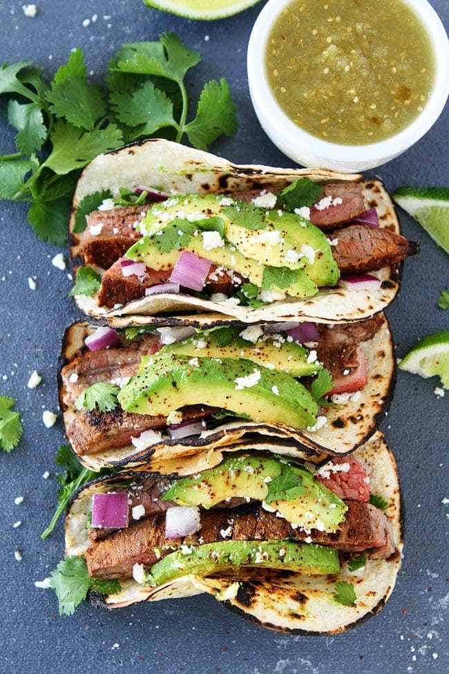

Tacos

Grilled Steak Tacos
Tomorrow is Taco Tuesday, our favorite day of the week. We want to make sure you are ready to celebrate Taco Tuesday, so today we are sharing this awesome recipe for Grilled Steak Tacos. This is Josh’s favorite taco recipe. He says they are the BEST!
Description
- Rib Steak
- Flour Tortillas
- Avocado
- Tomato
- Jalapeno
- White onion
Steps
- Season and grill the steak (let sit while you complete the following steps)
- Dice onions, tomatos and jalapenos
- Pit, peal and slice the avocado
- Lighly toast the tortillas in a hot pan
- Slice the steak into thin strips and put everything in the tortilla